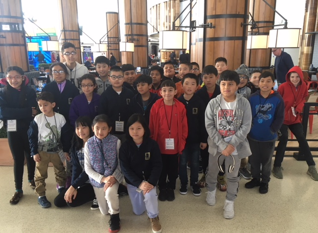

Hi again! My name is Nelson, I'm currently 15 years old, with a late birthday, and am a rising Junior. I currently live in Brooklyn, NY and have lived in Brooklyn for the past few years of my life. My parents are immigrants from China. I was born here in the US. I have a brother and a sister, both younger than me so I'll be the first to head to college. My favorite hobby is playing chess. I have played for several years but I'm not that good at chess, I have met pretty amazing people in chess clubs, and programs that involve chess. I currently am attending Stuyvesant High School. Yes, Stuy may sound depressing but overall not too shabby of a school. So that'll conclude my self-introduction and explore a bit more.
Image on the left is a group photo of the Chess club when I was in elementary school.
Straight to the point. I played Chess for 8 years now, starting all the way from 3rd grade, I only joined the chess club because my mom's friend child played chess and recommended the chess program as it was a fun game and I could have some fun along the way. It was a fun experience, going to Tennessee every year to play in a tournament, overall I don't remember too much other than the fact that I was always competing for higher rating with my fellow chess mates and other than chess, played some variation of Pokemon that used your ability to flip bent cards to win other people's cards. Trading cards that looked coolest, or some EX.
It continued through middle school(I.S. 318), I played in 6th grade in a school well known for their chess performance. I learned some new openings, socialized during class(most of us were learning or already playing chess). The school provided many opportunites for us to up our chess skills, with free tournaments at the Marshall Chess Club(a iconic chess club located at West 10th street) where you can compete for some money and some quads where you can earn some quick money. But, COVID happened and everyone went into quarantine so I took a 2 year break from Chess and only until High School I continued again.
I went to a program called Chess-in-the-Schools and restarted playing chess. I didn't join the chess club during my freshman or my sophmore year because I didn't feel like it. But, the 2 years I didn't play also led to my chess skill deteriorate as such I struggled during my freshman year. I'm still learning some new openings, jumping around while taking my previous experiences into account. But, here my am almost a Junior and I'm probably still continuing to play chess. I'm currently a 1500, trying to hit 1600.